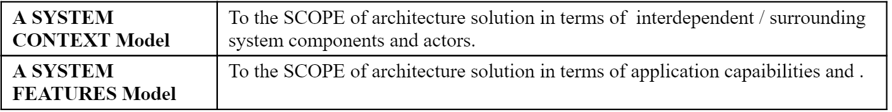
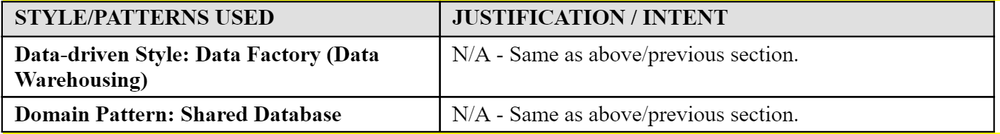

Objectives
In this Lab, we will build the Architecture Description for Runkeeper’s Achiever Analytics Dashboard solution. We will compose some of the Architectural Artifacts created in previous Labs into a single container document – i.e. an Architecture Description deliverable.
LAB INTRODUCTION (Section E)
In the past Labs we have created a number of Architectural Artifacts. IT Architects are expected to submit their Architecture for review and Stakeholder approval. In the same way IT Architects do, you will therefore have to submit your work assignment deliverable in the form of a single, all encompassing, Architecture Description document deliverable.
In SECTION E of this Lab, for example purposes, we will build the Architecture Description for Runkeeper’s Achiever Analytics Dashboard solution. We will compose some of the Architectural Artifacts created in previous Labs into a single container document – i.e. an Architecture Description deliverable.
To achieve this, we will work from the Architecture Description document template provided by the TOGAF 9.1 Architecture Framework:
[TOGAF 9.1 AD Template PDF](./archives/TOGAF 9.1 AD.pdf)
[TOGAF 9.1 AD Template ODT](./archives/TOGAF 9.1 AD.odt)

STEP E1
As we are starting our first deliverable, we will first focus on enumerating the View Models, Patterns, Styles and annotate the rationale behind our decisions.
i.e. select the following Architecture Views:

...and list the Architecture Styles & Patterns we will leverage, keeping in mind that we’ll need to explain the rationale behind their selection, and how these link to Views:

STEP E2
We will address the Required Quality Attributes of the architecture with Perspectives, and for each, record decisions and trade-offs we made.
This is something we haven’t yet worked in our Labs, but is an important aspect of our architecture, so let’s take the time to document the required quality properties of our solution:

STEP E3
Lastly, it is important to spend some time to capture elements of the problem space that give some essential context to the Architecture we put forward, and articulate a few key assumptions for Stakeholders to confirm:

EXERCISE:
Download the TOGAF AD 9.1 Template provided
- [TOGAF 9.1 AD Template ODT](./archives/TOGAF 9.1 AD.odt)
- Based on the descriptions provided above, fill-out the PROBLEM SCOPE section (Section A.1) of the AD Template
- Based on the descriptions provided above, fill-out the REQUIRED QUALITY PROPERTIES section (Section A.3) of the AD Template
- Based on the descriptions provided above, fill-out the ARCHITECTURE VIEWS section (Section B.1) of the AD Template
Note: The resulting output / solution can be found here:
- [TOGAF 9.1 AD RunKeeper Solution ODT](./archives/TOGAF 9.1 AD - RK.odt)
- [TOGAF 9.1 AD RunKeeper Solution DOCX](./archives/TOGAF 9.1 AD - RK.docx)
- [TOGAF 9.1 AD RunKeeper Solution PDF](./archives/TOGAF 9.1 AD - RK.pdf)
SECTION E4. – DOCUMENTING VIEWS
Step E.4.1
In order to describe the Context View of of Architecture Solution, we select two types MODEL PRIMITIVES, each based on a specific VIEW TYPE:

The SYSTEM CONTEXT MODEL describing part of our CONTEXT VIEW is described as follows:

The corresponding model artifact, created in a previous Lab greatly benefits from the descriptions above, (typically during an architecture review):

EXERCISE
Based on the descriptions provided above, fill-out the VIEW INTENT section (Section B.2.1) of the AD Template
Based on the descriptions provided above, fill-out the VIEW MODELLING ARTIFACTS section (Section B.2.2) of the AD Template
Note: The resulting output / solution can be found here:
- [TOGAF 9.1 AD RunKeeper Solution ODT](./archives/TOGAF 9.1 AD - RK.odt)
- [TOGAF 9.1 AD RunKeeper Solution DOCX](./archives/TOGAF 9.1 AD - RK.docx)
- [TOGAF 9.1 AD RunKeeper Solution PDF](./archives/TOGAF 9.1 AD - RK.pdf)
Step E.4.2
The SYSTEM FEATURES MODEL describing part of our CONTEXT VIEW is described as follows:


The following model artifact, created in a previous Lab, can then be reviewed:
EXERCISE
- Based on the descriptions provided above, fill-out the VIEW MODELLING ARTIFACTS section (Section B.2.2) of the AD Template.
Note: The resulting output / solution can be found here:
- [TOGAF 9.1 AD RunKeeper Solution ODT](./archives/TOGAF 9.1 AD - RK.odt)
- [TOGAF 9.1 AD RunKeeper Solution DOCX](./archives/TOGAF 9.1 AD - RK.docx)
- [TOGAF 9.1 AD RunKeeper Solution PDF](./archives/TOGAF 9.1 AD - RK.pdf)
Step E.4.3
In the same way we have document the Context View of our Architecture in the section above, other Views can be generated using the same structure.
EXERCISE
- Complete Sections B of the AD Template using the following model artifacts created in previous Labs:

- For each, try to justify the use of Model Kind, Patterns and Styles leveraged to model the View
Note: The resulting output / solution can be found here:
- [TOGAF 9.1 AD RunKeeper Solution ODT](./archives/TOGAF 9.1 AD - RK.odt)
- [TOGAF 9.1 AD RunKeeper Solution DOCX](./archives/TOGAF 9.1 AD - RK.docx)
- [TOGAF 9.1 AD RunKeeper Solution PDF](./archives/TOGAF 9.1 AD - RK.pdf)
SECTION E5. – DOCUMENTING PERSPECTIVES
We need to address the Required Quality Attributes of the architecture with Perspectives, and for each, record decisions and trade-offs we made.
For this Lab, we will prefer answering required quality attributes preferring textual description over visual models. There is not good reason for this; it is perfectly acceptable to annotate existing Archimate models with colors, legends and comments to document Perspectives.
For example: A description of the Flexibility/Maintainability Perspective of our Analytics Dashboard.

However, the most common practice in the industry remains structured textual contents.
As a result, and for the purposes of this Lab, what follows prefers a textual description over modeling.
Step E.5.1: Performance Perspective
Required Quality Attribute(s):

- Recording of design decisions and trade-offs:

EXERCISE
Fill-out the PERFORMANCE PERSPECTIVE section (Section B.6.1) of the AD Template, using textual descriptions proposed above.
Reflexion point: Imagine what models you would annotate if you had to represent your Perspectives using visual models (hence keeping traceability of architectural decisions version-controlled in the same framework as the rest of your model artifacts).
Reflexion point: Since the Quality Properties of an Architecture (like Performance) permeate across many Views of a solution design, would generating a Mapping of existing Views into one Model help your annotation efforts?
Note: The resulting output / solution can be found here:
- [TOGAF 9.1 AD RunKeeper Solution ODT](./archives/TOGAF 9.1 AD - RK.odt)
- [TOGAF 9.1 AD RunKeeper Solution DOCX](./archives/TOGAF 9.1 AD - RK.docx)
- [TOGAF 9.1 AD RunKeeper Solution PDF](./archives/TOGAF 9.1 AD - RK.pdf)
Step E.5.2: Scalability Perspective
Required Quality Attribute(s):

- Recording of design decisions and trade-offs:

EXERCISE
- Fill-out the SCALABILITY PERSPECTIVE section (Section B.6.2) of the AD Template, using textual descriptions proposed above.
Note: The resulting output / solution can be found here:
- [TOGAF 9.1 AD RunKeeper Solution ODT](./archives/TOGAF 9.1 AD - RK.odt)
- [TOGAF 9.1 AD RunKeeper Solution DOCX](./archives/TOGAF 9.1 AD - RK.docx)
- [TOGAF 9.1 AD RunKeeper Solution PDF](./archives/TOGAF 9.1 AD - RK.pdf)
Step E.5.3: Testability Perspective
Required Quality Attribute(s):

- Recording of design decisions and trade-offs:

EXERCISE
- Fill-out the TESTABILITY PERSPECTIVE section (Section B.6.3) of the AD Template, using textual descriptions proposed above.
Note: The resulting output / solution can be found here:
- [TOGAF 9.1 AD RunKeeper Solution ODT](./archives/TOGAF 9.1 AD - RK.odt)
- [TOGAF 9.1 AD RunKeeper Solution DOCX](./archives/TOGAF 9.1 AD - RK.docx)
- [TOGAF 9.1 AD RunKeeper Solution PDF](./archives/TOGAF 9.1 AD - RK.pdf)
Step E.5.4: Flexibility Perspective
Required Quality Attribute(s):

- Recording of design decisions and trade-offs:

EXERCISE
- Fill-out the FLEXIBILITY PERSPECTIVE section (Section B.6.4) of the AD Template, using textual descriptions proposed above.
Note: The resulting output / solution can be found here:
- [TOGAF 9.1 AD RunKeeper Solution ODT](./archives/TOGAF 9.1 AD - RK.odt)
- [TOGAF 9.1 AD RunKeeper Solution DOCX](./archives/TOGAF 9.1 AD - RK.docx)
- [TOGAF 9.1 AD RunKeeper Solution PDF](./archives/TOGAF 9.1 AD - RK.pdf)